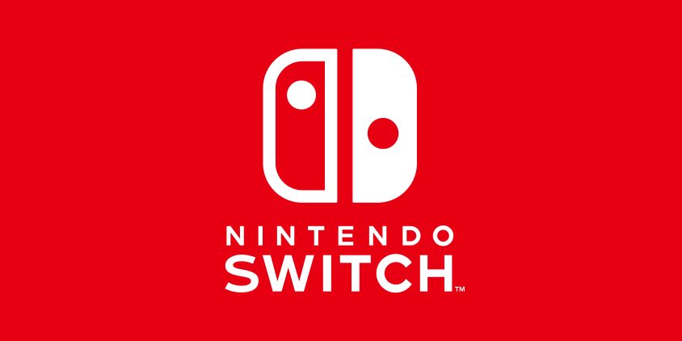

- 

|
¡Vuelve la NES! Esta vez en formato mini y con salida HDMI
Rememora los juegos de la NES y vuelve a jugar a ellos. Compra ya Nintendo Classic Mini HW NES y disfruta de sus 30 juegos preinstalados. |
|
|---|---|
|
Se anuncia nuevo personaje para Gears of War 4: Gary Carmine
Celebrando el décimo aniversario de Gears of War, The Coalition ha anunciado un Gear Pack especial del décimo aniversario que contiene al cuarto de los hermanos Carmine, Gary. |